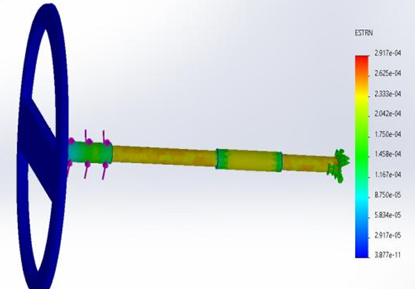

High-level control
Fuzzy inference evaluates the input conditions and generates the required steering-assist torque.
FINAL YEAR PROJECT · SEPTEMBER 2025 — MAY 2026
Designed and developed an intelligent Electric Power Steering (EPS) system integrating mechanical engineering, sensor instrumentation, embedded electronics, and hybrid fuzzy-logic and PID control. The system was implemented on a motorized go-kart prototype to investigate adaptive steering assistance based on driver input and operating conditions.

MECHATRONICS · INTELLIGENT CONTROL · EMBEDDED SYSTEMS
Conventional steering assistance relies on control characteristics that may not fully accommodate changing driving conditions. This project investigated an adaptive approach in which steering assistance is determined through a fuzzy-logic controller and regulated through a PID-based motor-current control loop.
The development process extended from mechanical design and structural analysis to custom sensing, embedded programming, controller implementation, and physical system integration.
The EPS architecture combines high-level intelligent assistance generation with low-level motor-current regulation. Driver-related inputs and operating conditions are processed by a fuzzy-logic controller, which determines the required steering-assist torque.
The assist-torque command is converted into a motor current reference. A PID controller then regulates motor current by comparing the reference with measured current feedback and generating the corresponding control signal for the motor driver.


The architecture connects the sensing subsystem, embedded controller, motor-driver electronics, assist motor, and steering mechanism.
Independent power supplies were incorporated for the assist motor, main drive system, and controller and sensor electronics.
The mechanical development began with CAD modeling of the steering assembly and supporting go-kart structure. The original automotive steering concept required adaptation to a compact prototype that could be manufactured and assembled with available resources.
The design process involved refining the chassis geometry, steering-column arrangement, mechanical linkages, component mounts, and custom transmission interfaces.

The chassis model established the physical platform for the steering assembly, seating arrangement, and mechanical component integration.
The CAD development supported the transition from the initial automotive concept to a manufacturable kart-scale platform.

The steering assembly was modeled to investigate the mechanical transmission of driver input through the steering column and linkage.
During prototype adaptation, the original rack-and-pinion concept was replaced by a simpler steering linkage suitable for the manufactured kart configuration.

The prototype development required adapting the initial design to the existing kart platform, aligning steering components, and integrating the mechanical and electronic subsystems.
Reliable steering assistance depends on acquiring meaningful information about driver input and system response. The project integrated custom torque sensing, steering-angle measurement, and motor-current feedback into the control architecture.
These measurements support the controller's ability to interpret steering demand and regulate the electric assist mechanism.

A strain gauge was integrated into a machined aluminum steering-shaft extension to investigate torsional deformation associated with applied steering torque.
The sensor signal was conditioned and calibrated to provide torque-related information for the intelligent controller.

Structural simulation was used to investigate the strain distribution along the steering shaft under the modeled loading conditions.
This analysis supports the mechanical understanding of the torque-sensing arrangement and its integration into the steering system.

An incremental rotary encoder was integrated into the steering mechanism to measure angular displacement and provide steering-position information.
The resulting encoder signal was used as part of the steering-input measurement and control-development process.

The central intelligent-control component of the project is a fuzzy-logic controller designed to determine the appropriate steering-assist torque according to driving conditions and driver input.
The controller uses four input variables: vehicle velocity, steering torque, yaw rate, and steering angle. These inputs are processed through membership functions and a rule base to determine the assist-torque output.
The rule base was developed and refined during the project to account for steering demand while considering stability-related conditions.

The control surface illustrates how the fuzzy controller maps operating conditions to assist-torque decisions.
The controller aims to provide steering assistance while avoiding excessive amplification under conditions where stability should take priority.

The rule base translates combinations of input conditions into linguistic assist-torque decisions.
For example, steering demand at low velocity can justify greater assistance, whereas elevated yaw conditions or high-speed operation require more conservative assistance.
The final documented rule set contains 50 tuned rules.
The intelligent-control strategy was intended for implementation on an embedded platform. The TI TMS320F28379D microcontroller formed the core of the control hardware, connecting sensor acquisition, control computation, and motor-driver commands.
The fuzzy controller determines the desired assist torque. This command is converted into a current reference using the motor torque constant. A PID controller then regulates motor current using feedback from the current-sensing subsystem.
Fuzzy inference evaluates the input conditions and generates the required steering-assist torque.
The assist-torque command is converted into a desired motor-current reference using the motor torque constant.
PID control compares the current reference with measured motor current and regulates the motor-drive command.
The control architecture brings together the microcontroller, motor-driver electronics, assist motor, and current feedback.
Integration of these elements was essential to connect the intelligent decision-making layer with the physical steering actuator.
Structural simulation and engineering analysis supported the assessment of the mechanical components and their behavior under the specified loading conditions.
The project also included sensor calibration, steering-response measurements, controller testing, and system-level integration activities.

Finite element analysis was used to investigate the structural response of the modeled chassis under the specified loading and boundary conditions.
The reported minimum factor of safety was approximately 3.308 for the analyzed configuration.
This result should be interpreted within the assumptions and loading conditions of the simulation.
The project culminated in the development and assembly of a motorized go-kart prototype incorporating the mechanical steering system, sensing hardware, embedded electronics, and electric steering-assist concept.
The prototype provided a physical platform for system integration, calibration, troubleshooting, and evaluation of the steering-control approach.


The final prototype brought together the mechanical, electronic, sensing, and control subsystems developed throughout the project.
The project demonstrated the integration of intelligent control and embedded mechatronic engineering in a physical steering-assistance platform.
As part of a four-member multidisciplinary engineering team, I contributed across mechanical development, sensing, intelligent control, embedded integration, and experimental evaluation.
Contributed to the development and implementation of the hybrid fuzzy-logic/PID control strategy using MATLAB and Simulink.
Contributed to the development and integration of strain-gauge torque sensing, rotary encoder angle measurement, and motor-current feedback.
Worked on integrating the TI C2000 microcontroller, motor-driver electronics, sensing hardware, and control system.
Contributed to SolidWorks modeling, steering mechanisms, chassis geometry, mechanical linkages, and custom component interfaces.
Participated in turning, welding, drilling, mechanical fitting, additive manufacturing, and prototype assembly.
Participated in sensor calibration, troubleshooting, system integration, and experimental evaluation of steering response and control behavior.
The Intelligent Electric Power Steering project demonstrated the integration of mechanical engineering, sensor instrumentation, embedded electronics, and intelligent control within a physical motorized go-kart prototype.
Through the combination of fuzzy-logic decision-making and PID motor-current regulation, the project explored an adaptive approach to steering assistance. The development process provided practical experience in mechatronic system architecture, signal acquisition, control implementation, hardware integration, and engineering validation.